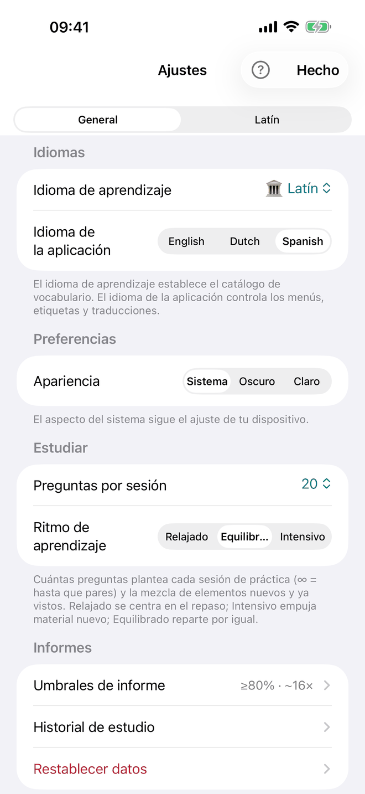
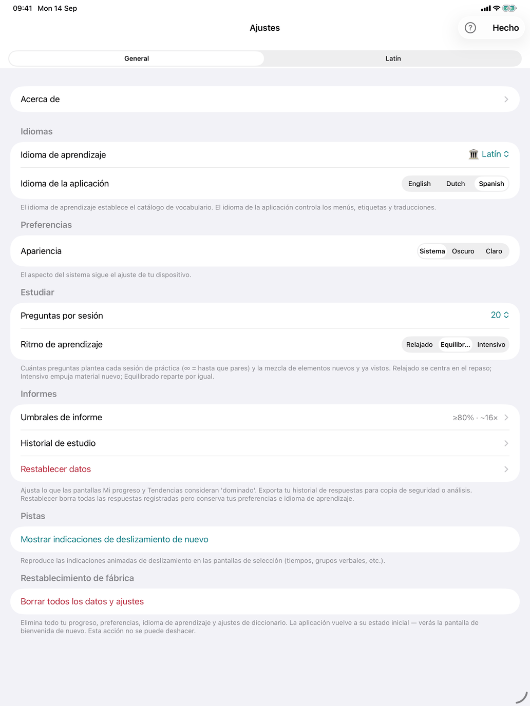
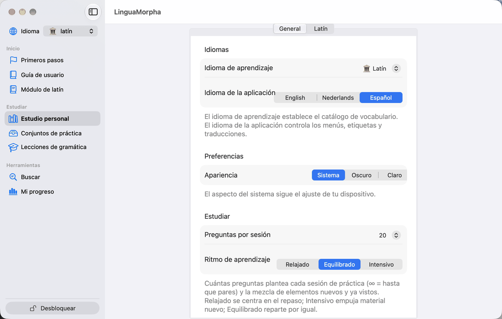
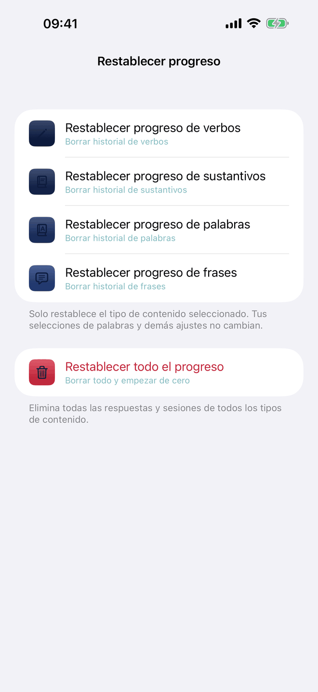
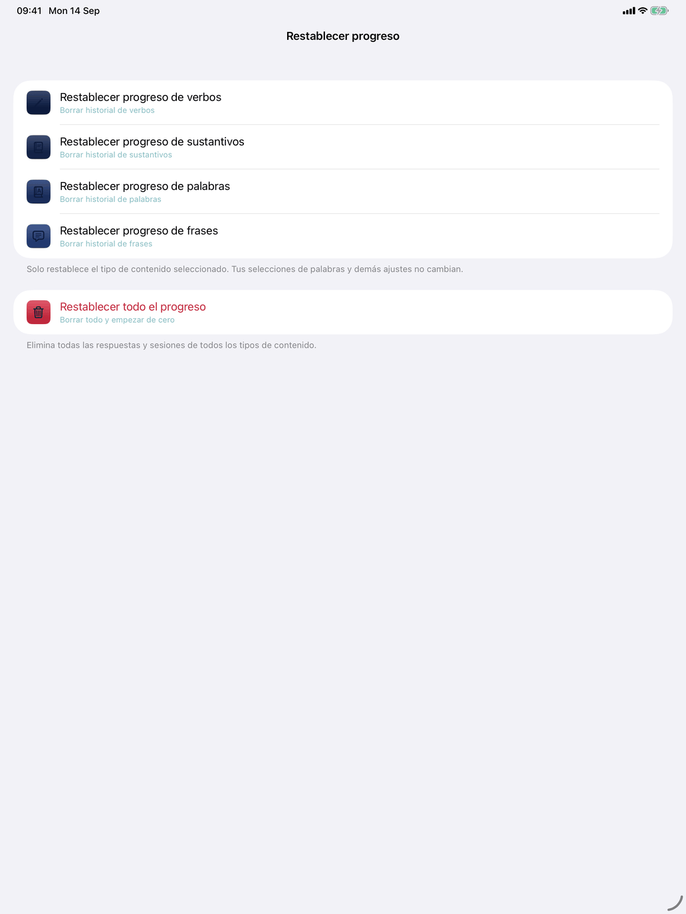
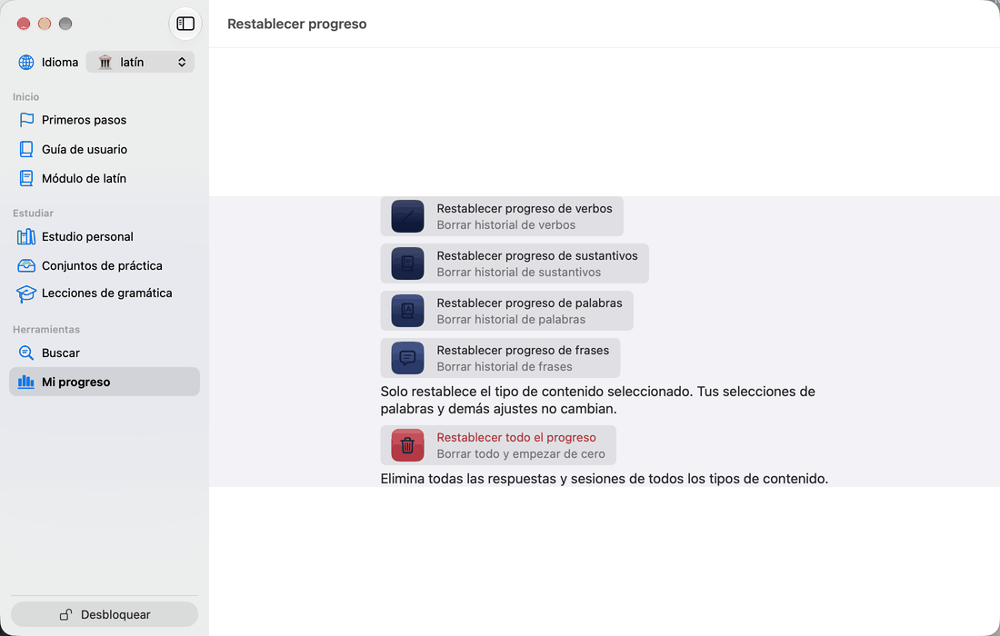
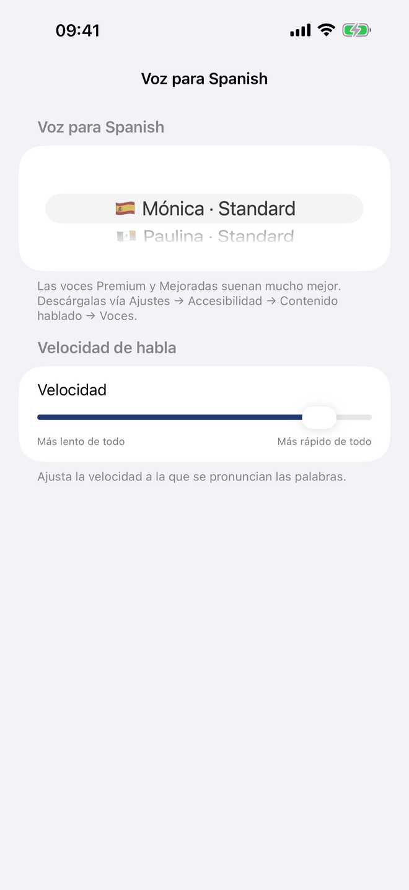
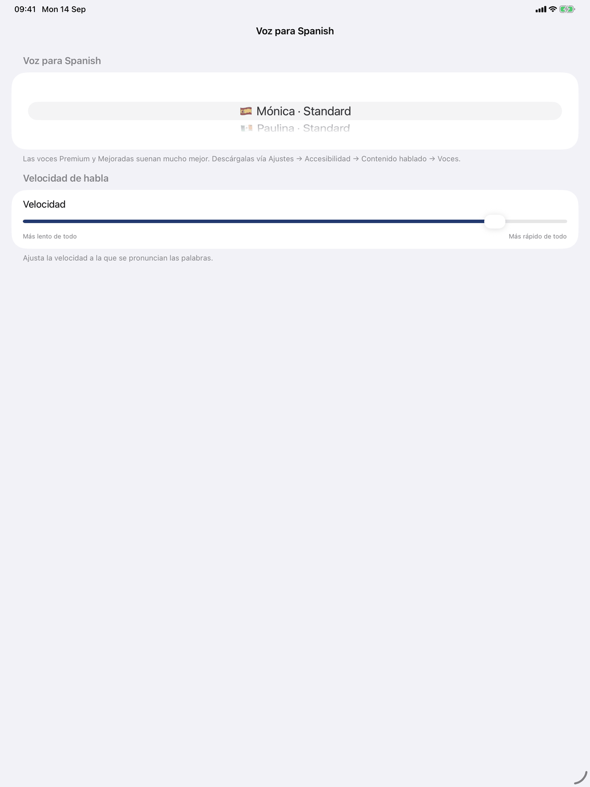
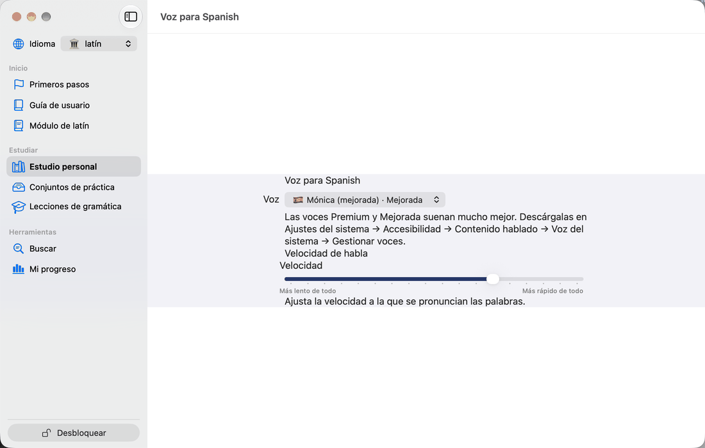

Ajustes



Ajustes reúne las preferencias que se aplican en toda la aplicación: idiomas, apariencia, tamaño y ritmo de las sesiones, calificación, voz, diccionarios y tus datos de estudio.
- iPhone y iPad — toca ⋯ arriba a la derecha de la pantalla principal y elige Ajustes. Hecho lo cierra, y ? lo explica.
- Mac — una ventana propia: LinguaMorpha → Ajustes… o ⌘,.
Hay cuatro pestañas: General, Estudiar, una pestaña con el nombre del curso que estudias (Español, Francés o Latín) con los ajustes propios de ese curso, y Progreso. En iPhone y iPad las pestañas son un selector en la parte superior; en el Mac son iconos en la parte superior de la ventana.
Ajustes y las filas de selección son cosas distintas. Los Ajustes son preferencias de toda la aplicación. Las filas de selección al principio de Práctica de cada apartado de Estudio personal es donde eliges qué palabras, grupos o tiempos entran en juego; está en ese apartado, no aquí.
General
Idiomas
- Idioma de la aplicación — Inglés, Neerlandés o Español. Determina el idioma de los menús, las etiquetas y la ayuda de la aplicación, y el idioma en el que se muestran las traducciones. El idioma que estudias no se ofrece — una traducción a ese idioma solo repetiría la palabra —, y una nota lo indica. El idioma de la aplicación vale para todos los alumnos del dispositivo.
El curso no se elige aquí, sino en Esquema y nivel, eligiendo uno de sus esquemas (consulta Niveles).
En el Mac, la barra de menús se crea al iniciar la aplicación, así que después de cambiar el Idioma de la aplicación esta ofrece Reiniciar ahora o Más tarde; el resto de la aplicación cambia al instante.
Preferencias
- Apariencia — Sistema, Oscuro o Claro. Sistema sigue el ajuste de tu dispositivo.
Indicaciones (iPhone y iPad)
- Mostrar indicaciones de deslizamiento de nuevo — vuelve a mostrar la indicación de deslizamiento en las tarjetas: hacia qué lado deslizar para lo sabía y no lo sabía.
Estudiar
- Preguntas por sesión — cuántas preguntas hace una sesión: 10, 20 (el valor por defecto), 30, 50 o ∞ (sigue hasta que pares). Se aplica a todos los ejercicios.
- Ritmo de aprendizaje — Relajado, Equilibrado (el valor por defecto) o Intensivo: la proporción de palabras ya vistas y palabras nuevas en cada sesión. Relajado se inclina por el repaso, Intensivo por el material nuevo y Equilibrado reparte a partes iguales. Consulta Aprendizaje adaptativo — cómo funciona.
- Avance automático tras respuesta correcta — activado por defecto. Tras una respuesta correcta, el ejercicio pasa solo a la pregunta siguiente; una respuesta incorrecta siempre espera a Siguiente, para que puedas leer la corrección. Un ejercicio de elección que explica cada respuesta (los de concordancia, apócope, preposiciones y pronombres) nunca avanza solo: Siguiente, o Retorno, continúa cuando has leído la explicación.
- Avance automático tras — visible mientras el avance automático está activado: cuánto espera antes el ejercicio, 1 s, 2 s (el valor por defecto), 3 s o 5 s.
Calificación
- Ortografía exacta — desactivada por defecto. Entonces una respuesta escrita con una tilde incorrecta o que falta (español, francés) o un macrón (latín) cuenta como correcta, con una nota que muestra la grafía correcta; en español, lo mismo vale para una pequeña errata en una forma verbal. El francés y el latín solo perdonan tildes y macrones, no erratas. La excepción es una respuesta que escribe otra forma de la misma palabra —la nota bajo el interruptor da un ejemplo del curso que estudias—, que es incorrecta, porque es otra forma. Con Ortografía exacta activada, solo cuenta la grafía exacta. Se aplica donde escribes: Producir la conjugación y, en latín, también Declinar el sustantivo y Declinar el adjetivo. Una respuesta elegida se califica siempre por la forma exacta. Un único ajuste para todos los cursos.
La pestaña del curso
Niveles
- Esquemas de niveles — abre la ventana de esquemas de niveles; la fila muestra el esquema en uso. Consulta Niveles.
Español y francés
Voz y conjugación
- Voz — la voz para el idioma del curso. En iPhone y iPad, la fila muestra la voz actual y abre una pantalla con la lista de voces y el control deslizante Velocidad. En el Mac, el menú de voces y el control deslizante están directamente en la pestaña.
- Velocidad — la rapidez con la que se pronuncian las formas, de Más lento de todo a Más rápido de todo. Una misma velocidad se aplica a todos los cursos.
- Incluir pronombre — pronuncia el pronombre (yo / tú / él…, je / tu / il…) delante de cada forma conjugada. Activado por defecto.
Servicios de diccionario
Las páginas de verbos, sustantivos, frases y otras palabras tienen un icono de libro en la barra de herramientas; tócalo para abrir un menú de diccionarios en línea:
- Linguee — frases de ejemplo de textos traducidos reales.
- WordReference — entradas bilingües con notas de uso.
- Reverso — traducciones en contexto y tablas de conjugación.
- RAE — el diccionario de la Real Academia Española (solo español).
Toca un interruptor para elegir qué diccionarios ofrece el menú. Al principio están activados los cuatro, y los sitios son de uso gratuito; cuando sepas cuáles usas, desactiva el resto para que el menú sea corto. Si no hay ninguno activado, el libro desaparece.
La pestaña Francés ofrece los mismos interruptores sin RAE, y las elecciones son compartidas: un diccionario desactivado en una pestaña también lo está en la otra. El latín no tiene fila de diccionarios. En iPhone y iPad, un diccionario se abre en una hoja de navegador dentro de la aplicación; en el Mac se abre en tu navegador web.
Latín
El latín no tiene fila Voz ni diccionarios; consulta Configurar la voz.
Progreso
La pestaña se titula Progreso de con el nombre del alumno actual: todo lo que contiene, salvo la última fila, se refiere a ese alumno.
- Historial de estudio — el registro de las sesiones y respuestas del alumno, de todos los cursos. Exportar guarda una carpeta fechada con archivos CSV que contienen todas las sesiones y respuestas: consérvala como copia de seguridad, ábrela en Numbers o Excel, o impórtala en otro dispositivo. Importar lee una carpeta de ese tipo, o los archivos que contiene; las respuestas se suman a las que ya hay, no se reemplaza ni se elimina nada, e importar dos veces la misma exportación no cambia nada. Solo se puede importar tu propio historial: una exportación hecha con otra cuenta de Apple se rechaza, y ante una exportación que no dice de quién es, la aplicación pregunta ¿De quién es este historial? antes de continuar. Una exportación de otro alumno de este dispositivo también pregunta antes (Historial de otro alumno). Los conjuntos de práctica no se incluyen: tienen su propia exportación (consulta Conjuntos de práctica).



- Restablecer progreso — elimina las respuestas registradas del alumno actual, en todos los cursos. Restablece por separado el progreso de verbos, sustantivos, palabras o frases, o usa Restablecer todo el progreso para eliminar todas las respuestas y sesiones. Cada opción pide confirmación. Tus selecciones de palabras, ajustes, esquema y nivel no se ven afectados.
- Borrar todos los datos y ajustes — elimina el progreso de todos los alumnos, todos los ajustes, esquemas y niveles, y la elección de diccionarios, y devuelve la aplicación al estado del primer inicio, con las pantallas de bienvenida. Pide confirmación y no se puede deshacer.



Voz y velocidad
LinguaMorpha habla con las voces que Apple instala en tu dispositivo (consulta Configurar la voz). Para elegir una:
- Abre Ajustes y cambia a la pestaña de tu curso.
- En iPhone y iPad, toca Voz. La lista muestra todas las voces instaladas para el idioma, cada una con su bandera y la etiqueta de calidad de Apple: Estándar, Mejorada o Premium. Primero aparecen las voces de la región principal del curso y después las de otras regiones, de mejor a peor calidad. En el Mac, elige en el menú Voz.
- Elige una voz.
- Ajusta Velocidad a tu gusto.
Si no hay ninguna voz instalada para el idioma, la pantalla lo indica y te dice dónde descargar una.